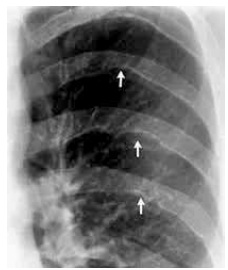
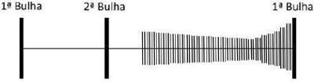
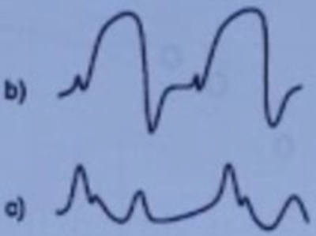
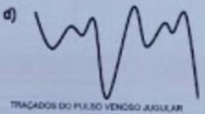
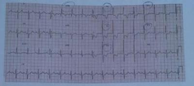
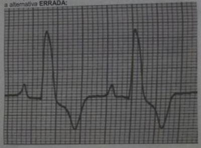
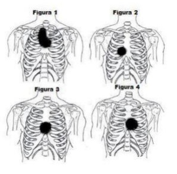

Questão 1 · Coarctação de aorta · Coarctação da aorta · Coarctação da aorta · 4000185449Jovem do sexo masculino, 22 anos, é encaminhado ao ambulatório para avaliação de hipertensão arterial sistêmica. Não apresenta antecedentes familiares relevantes e não faz uso de medicamentos ou substâncias ilícitas. O exame físico revela: desdobramento siológico de B2 e hiperfonese da segunda bulha em foco aórtico, além de sopro sistólico ejetivo ao longo do bordo esternal esquerdo. O paciente traz uma radiografia de tórax com o seguinte achado, ampliado no detalhe: Em face do exposto, é correto afirmar que a causa mais provável da hipertensão arterial é secundária

A à coarctação da aorta.
B à síndrome de Cushing.
C ao hiperparatireoidismo.
D à apneia do sono.
E ao hipotireoidismo.
Questão 2 · Sopros sistólicos · Estenose aórtica · Exame f ísico · 4000184841Homem, 80 anos, apresenta ao exame físico sopro aórtico mesosistólico rude (4+/6+) e pulso carotídeo de amplitude reduzida. Pode-se afirmar que o sintoma mais associado a um prognóstico ruim é:
A dispneia
B síncope
C angina
D palpitação
Questão 3 · Sopros sistólicos · Estenose aórtica · 4000183502Homem de 64 anos vem ao ambulatório de cardiologia para primeira consulta. Relata que há três meses vem apresentando dispneia progressiva aos esforços. Tinha o hábito de caminhar no parque, 6 km diários e, atualmente, mal consegue subir alguns degraus de escada na sua residência. Em algumas situações, apresenta dor torácica associada. Na semana passada, ao tentar ajudar os amigos a empurrar um carro, apresentou um episódio de síncope. Está normotenso e a ausculta cardíaca evidenciou um sopro sistólico em “crescendo-decrescendo” no segundo espaço intercostal, na borda esternal direita. Diante desses achados de história e exame físico, qual seria sua primeira hipótese diagnóstica?
A Comunicação Interatrial;
B Estenose Aórtica;
C Insuficiência Mitral;
D Insuficiência Tricúspide.
Questão 4 · Sopros sistólicos · Exame f isico · Cardiologia · 4000181542O Prolapso da Valva Mitral (PVM) tem apresentações clínicas muito variáveis em decorrência dos diferentes mecanismos patológicos que envolvem o aparelho valvar mitral. Analise as assertivas relacionadas ao PVM. I. O PVM é a anormalidade que mais comumente leva à insuficiência mitral primária. II. O PVM é encontrado com frequência em pacientes com distúrbios hereditários do tecido conetivo, como síndrome de Marfan, osteogênese imperfeita e síndrome de Ehlers-Danlos. III. O folheto anterior da valva mitral é o mais afetado no PVM, e o anel valvar frequentemente encontra-se dilatado. IV. A regurgitação mitral decorrente do prolapso do folheto anterior da valva mitral provoca um sopro irradiado para a base do coração. Escolha entre as alternativas abaixo, as assertivas corretas.
A I e II apenas.
B I e IV apenas.
C II e III apenas.
D I, II e III apenas.
E IV apenas.
Questão 5 · Exame f ísico · Cardiologia · Sopros diastólicos · 4000181541A Insu ciência Aórtica (IAo) pode ser causada por doença valvar primária, doenças da raiz aórtica ou uma combinação de ambas. Analise as assertivas relacionadas à IAo. I. São causas de IAo valvar: congênita (bicúspide, endocardite infecciosa, febre reumática, sífilis, espondilite anquilosante. II. São causas de IAo por doença da raiz aórtica: dissecção aórtica, síndrome de Marfan, aortite, hipertensão arterial, degeneração cística da túnica média. III. Na IAo aguda grave a pressão diastólica do ventrículo esquerdo eleva-se rapidamente e pode sobrevir edema agudo do pulmão. IV. Na IAo crônica grave o ictus cordis é amplo e deslocado lateral e inferiormente, e o pulso arterial é descrito como parvus et tardus. Escolha entre as alternativas abaixo, as assertivas corretas.
A I e II apenas.
B I e IV apenas.
C II e III apenas.
D I, II e III apenas.
E IV apenas.
Questão 6 · Exames complementares · Diagnóstico · Exame f ísico · 4000191062Mulher, 82 anos, apresentou três episódios de perda súbita da consciência, após se levantar, nas últimas três semanas. Nega tontura, escurecimento da visão ou dor precordial precedendo os quadros. Após recobrar a consciência, encontra-se normal, sem sonolência ou liberação es ncteriana. Antecedentes pessoais: hipertensão arterial em uso de clortalidona e valsartana; osteoporose em uso de de cálcio e vitamina D. Exame físico: PA 155 x 70 mmHg; FC = 72 bpm; ausculta cardíaca: sopro sistólico em diamante em focos da base; ausculta pulmonar limpa. Foi solicitado ecocardiograma transtorácico que, certamente, mostrará:
A insuficiência aórtica.
B cardiomiopatia hipertrófica.
C estenose aórtica.
D estenose mitral.
E aneurisma de aorta torácica.
Questão 7 · Ruídos cardíacos básicos · 4000169414A respeito da ausculta cardíaca, assinale a alternativa correta.
A A ausência de sopro descarta cardiopatia.
B A presença de sopro diastólico é inocente.
C O sopro característico da CIV é o sistodiastólico em maquinaria.
D O sopro inocente apresenta frêmito precordial palpável.
E A segunda bulha está aumentada nas cardiopatias de hiperfluxo pulmonar.
Questão 8 · Síndrome de Boerhaave · Pericardite constritiva · Semiologia cardiaca · 4000168565Um paciente no 8+ dia de infecção pelo SARS-COV-2 encontra-se em uso de cateter nasal de alto uxo (CNAF) a 40 litros e saturação de 02 a 97%. Algumas horas depois, o paciente se queixa de intensa dor torácica, apresentando saturação de 65%, apesar do uso de CNAF, além de intenso esforço respiratório, turgência jugular e hipotensão. Em meio ao caos do quadro, a R1 de plantão percebe durante a ausculta cardíaca que o paciente apresentava crepitações em precórdio, sincrônicas aos batimentos cardíacos. A complicação apresentada e o sinal semiológico, respectivamente, são:
A Embolia pulmonar maciça e sinal de Boerhaave;
B Ruptura de cordoalha e sinal de Kussmaul;
C Embolia gordurosa e sinal de Hollenhorst;
D Embolia gasosa e sinal de Palla;
E Pneumomediastino e sinal de Hamman.
Questão 9 · Diagnóstico · Cardiologia · 4000167342Homem, 57a, é trazido ao serviço médico após episódio de desmaio ao realizar grande esforço no trabalho. Conta que subitamente perdeu a consciência, sem referir qualquer outro sintoma, e que ao acordar não apresentava dé cits. Nas últimas semanas sentiu aperto no peito ao realizar os esforços que desaparecia ao repouso. Exame físico: PA= 110x85 mmHg; FC= 92 bpm; FR= 16 irpm; Oximetria de pulso (ar ambiente)= 97%, corado, hidratado. Pulso carotídeo diminuído e tardio; Coração: ictus no 5o espaço intercostal esquerdo desviado 2 cm para a esquerda da linha hemiclavicular ipsilateral, bulhas rítmicas com sopro mesossistólico ejetivo, rude, audível em focos aórtico, aórtico acessório e mitral, irradiado para o pescoço com B4 presente; extremidades: pulsos de baixa amplitude. O DIAGNÓSTICO É:
A Insuficiência aórtica.
B Insuficiência mitral.
C Estenose aórtica.
D Estenose mitral.
Questão 10 · Sopros sistólicos · 4000145471Mulher de 41 anos queixa-se de dispneia ao andar menos de 2 quarteirões no plano e ao varrer a casa, há 5 meses. Teve tromboembolismo pulmonar no puerpério há 6 meses e está em uso de apixabana desde então. Desconhece outras comorbidades e nega o uso de outros medicamentos. Ao exame, PA 120/76mmHg, FR 1 Sipm, SpO2 93% (em ar ambiente). O exame respiratório é normal. O ictus cordis é palpado no 4° EIC na linha hemiclavicular (LHC) esquerda, possui extensão e duração normais. Palpa-se movimento na região paraesternal esquerda inferior. A segunda bulha apresenta desdobramento contínuo, mais amplo à inspiração, audível ao longo da borda paraesternal esquerda e no ápice, com hiperfonese do segundo componente. Ausculta-se sopro sistólico inicial, que abafa a primeira bulha, suave, na borda paraesternal esquerda, com acentuação inspiratória. Os achados do exame cardiovascular sugerem o diagnóstico de:
A Comunicação interatrial
B Estenose tricúspide
C Hipertensão pulmonar
D Insuficiência mitral
Questão 11 · Sopros cardíacos · 4000143201Mulher de 34 anos tem história pregressa de febre reumática há vários anos, acometendo a valva mitral. Ao examinar a paciente, a suspeita clínica é de regurgitação mitral. A siopatologia e a ausculta típica no foco mitral nesse caso, respectivamente, são:
A sobrecarga de pressão / sopro holossistólico, irradiação para meso e B4
B sobrecarga de volume / sopro holossistólico, irradiação para a axila e B3
C sobrecarga de volume / sopro sistólico em diamante, irradiação para axila e B3
D sobrecarga de pressão / sopro sistólico em diamante, irradiação para meso e B4
Questão 12 · Características dos sopros cardíacos · Cardiologia · 4000142368Uma paciente de 32 anos de idade procurou a unidade básica de saúde com queixa de astenia h á dois meses. É tabagista de um maço por dia há dez ano s. Refere ciclos menstruais regulares , com sangramento volumoso por doze dias a cada ciclo. Exame físico: pressão arterial de 1 2 0 x 80 mmHg; frequência cardíaca de 1 10 ; e saturação de oxigênio de 9 7 Hipocorada ++/4+ 4+, anictérica, acianótica e eupneica. Exame cardiopulmonar: ritmo cardíaco regular com sopro sistólico ++/6+ pancardíaco sem irradiação. Murmúrios vesiculares audíveis bilateralmente sem ruídos adventícios. Restante do exame físico normal. Com base nessa situação hipotética, julgue o item. O sopro cardíaco identificado trata se provavelmente de sopro funcional.
A Certo.
B Errado.
Questão 13 · Coarctação da aorta · 4000141575Recém-nascido, 3 semanas de vida (parto normal), Apgar 9-10, IG: 39,5 semanas e pré-natal sem intercorrências, dá entrada na emergência. A mãe refere que o lho apresenta gemência e di culdade para mamar. Ao exame, além de não serem observados pulsos em MMII, o paciente está gemente, com: FC – 198 bpm; FR – 45 irpm; Temperatura axilar – 35,3 0C; PA – 110x90 mmHg; Bulhas rítmicas hipofonéticas; MV simétrico e estertores crepitantes em bases; Abdome globoso e flácido; Fígado a 5 cm do rebordo central direito (RCD); má perfusão periférica; e pele moteada. Quanto à causa etiológica da crise hipertensiva descrita, nesse caso clínico, assinale a alternativa correta.
A Tumor de suprarrenal.
B ICC por doença crônica intrauterina.
C Coarctação da aorta.
D Malformação renal.
E Hiperplasia adrenal congênita
Questão 14 · Características dos sopros cardíacos · 4000141118Mulher, 36a, queixa-se de dispneia em repouso, ortopneia e tosse seca. Exame físico: Coração: sopro diastólico +++/6+ em segundo espaço intercostal esquerdo, aspecto aspirativo, sopro diastólico em ru ar +++/6+, hiperfonese de B1 e nal de B2, extremidades: pulsos periféricos simétricos, amplitude normal. A HIPÓTESE DIAGNÓSTICA É:
A Estenose aórtica e insuficiência tricúspide.
B Dupla lesão mitral e estenose aórtica.
C Insuficiência pulmonar e estenose mitral
D Insuficiência aórtica e insuficiência mitral.
Questão 15 · Características dos sopros cardíacos · 4000138658A respeito da ausculta cardíaca, assinale a alternativa correta.
A A segunda bulha está aumentada nas cardiopatias de hiperfluxo pulmonar.
B A ausência de sopro descarta a cardiopatia.
C A presença de sopro diastólico é inocente.
D O sopro característico da CIV é o sistodiastólico em maquinaria.
E O sopro inocente apresenta frêmito precordial palpável.
Questão 16 · Sopros cardíacos · 4000138369Sobre as valvopatias cardíacas, assinale a alternativa correta que demonstre as correlações adequadas abaixo: I - Insuficência valvar mitral II - Insuficiência valvar aórtica III - Estenose valvar aórtica IV - Estenose valvar mitral A. Facies mitralis de congestão pulmonar e insuficiência cardíaca direita. B. B1 hipofonética, B2 hiperfonética, aumento da silhueta cardíaca com dilatação do ventrículo esquerdo e do átrio esquerdo, s C. Pulso ventrículo esquerdo e padrão D. Cor bovis, Sopro mesossistólico de hiperfluxo com hipofonese de B1.
A I-A, II-B, III-C, IV-D
B I-A, II-D, III-C, IV-B
C I-B, II-C, III-D, IV-A
D I-A, II-C, III-D, IV-B
E I-B, II-D, III-C, IV-A
Questão 17 · Estenose mitral · Sopros cardíacos · 4000138058Ao realizar o exame físico de um paciente com doença valvar reumática, a ausculta cardíaca revelou um sopro meso a telediastólico, mais audível na ponta do coração com o paciente em decúbito lateral esquerdo, de baixa frequência ou em rolar e introduzido por estalido de abertura. Qual a causa clássica desse sopro?
A Estenose aórtica.
B Insuficiência mitral.
C Estenose mitral.
D Insuficiência aórtica.
E Estenose pulmonar.
Questão 18 · Sopros sistólicos · Características dos sopros cardíacos · Pediatria · 4000129186Menina de 6 anos foi trazida à consulta por otalgia. Ao ser realizada a ausculta cardíaca, foi observado um sopro sistólico de alta frequência, vibratório, variável, concluído antes da segunda bulha, não precedido por estalido. Dentre os sopros abaixo, qual o mais provável?
A Sopro pulmonar
B Sopro pulmonar periférico
C Zumbido venoso
D Sopro de Still
Questão 19 · Avaliação do pulso venoso · Abordagem inicial das bradiarritmias · 4000124122Idosa, 92 anos, é trazida por familiares com descrição de quadro compatível com síncope ao levantar-se da cama. Na sala de emergência, encontra-se assintomática no leito. Ao exame, apresentava-se lúcida, orientada, com PA = 136x82mmHg; FC = 30bpm; FR = 22irpm. O ritmo cardíaco era regular com bulhas normofonéticas, sem sopros. Presença de onda “a em canhão” no pulso venoso. O primeiro exame complementar a ser solicitado e a alteração esperada são, respectivamente:
A radiografia do tórax → pneumotórax hipertensivo.
B eletrocardiograma → supradesnivelamento do segmento ST compatível com infartoagudo do miocárdio.
C eletrocardiograma → bloqueio atrioventricular total (terceiro grau).
D gasometria arterial → alcalose respiratória.
E ecocardiograma → tamponamento cardíaco.
Questão 20 · Exame f isico · 4000120165Mulher de 60 anos apresenta dispneia aos esforços, com piora progressiva no último ano, atualmente aos esforços habituais. Nega febre. Exame físico: bulhas rítmicas, hiperfonese de B1 com sopro diastólico em ru ar em 5° EIC esquerdo linha hemiclavicular e estalido de abertura. ECG: ritmo sinusal, sobrecarga atrial esquerda. Raio X de tórax: aumento do tronco da artéria pulmonar. A etiologia mais provável é
A degeneração senil.
B cardiopatia congênita.
C febre reumática.
D endocardite infecciosa.
Questão 21 · Manif estações clínicas e complicações · Sopros diastólicos · 4000114054Paciente de 50 anos, hipertenso, é admitido na emergência com dor torácica de forte intensidade, irradiada para a região interescapular, contínua e de início súbito. Apresentase agitado, com sudorese fria, PA: 180/100 mmHg, sopro diastólico em foco aórtico com irradiação para o bordo esternal direito e com sinais de insuficiência cardíaca. Esses sinais e sintomas estão relacionados à
A Estenose aórtica com ruptura de músculo papilar.
B Dissecção aórtica tipo III de DeBakey.
C Insuficiência mitral pós infarto agudo do miocárdio.
D Dissecção da aorta ascendente com insuficiência aórtica aguda.
Questão 22 · Exame f ísico · 4000107809Homem, 75 anos, com queixa de dor torácica em aperto, acompanhada de dispneia aos esforços, há 12 meses, com melhora ao repouso. Seu exame físico revela PA 150x70 mmHg, FC 86 bpm, ritmo regular, FR 16 ipm. À ausculta, sopro sistólico de alta frequência no segundo espaço intercostal à direita do esterno, com irradiação para a fúrcula e para a região cervical. Qual a hipótese clínica mais provável?
A Insuficiência mitral
B Comunicação interventricular
C Prolapso da válvula mitral
D Estenose aórtica
E Comunicação interatrial
Questão 23 · Persistência do canal arterial · 4000076453Gestante hipertensa grave necessita de cesárea de urgência. Dá à luz a recém- nascido prematuro extremo de 27 semanas, com peso de nascimento de 850g e Apgar 6/8. Necessitou ser reanimado na sala de parto com intubação orotraqueal por taquidispneia grave. Ao chegar à UTI neonatal, precisou de reposição de surfactante pulmonar por doença de membrana hialina e evoluiu satisfatoriamente, sendo extubado para ventilação não invasiva no 3º dia de vida. Contudo, no 5º dia de vida, apresenta apneias de repetição, retornando para ventilação mecânica com fração de oxigênio alta. Ao exame físico, apresenta precórdio hiperdinâmico e pulsos radiais em martelo d’água. À ausculta, apresenta sopro sistólico 4+/6+ em maquinaria, melhor audível em borda esternal esquerda com irradiação para a clavícula esquerda. O diagnóstico mais provável é:
A coarctação da aorta
B persistência do canal arterial
C hipoplasia de ventrículo direito
D hipoplasia de ventrículo esquerdo
Questão 24 · Quarta bulha cardíaca · Avaliação dos pulsos arteriais · Fibrilação Atrial · 4000036203Sobre o exame físico na fibrilação atrial, assinale a alternativa incorreta.
A Existe nítida variação na amplitude de pulso, sendo essa menor quanto mais próxima estiverem as ondas de pulso.
B Com um reforço pré-sistólico aumentado, a ausculta de uma quarta bulha em borda esternal inferior esquerda é perceptível, principalmente, em frequências cardíacas mais elevadas.
C Invariavelmente, há irregularidade da frequência cardíaca.
D O traçado de pulso jugular apresenta abolição da onda A.
Questão 25 · Diagnóstico · 4000006276Em relação a insuficiência mitral é CORRETO afirmar.
A A regurgitação mitral é definida pelo refluxo do sangue do Ventrículo Esquerdo ao átrio esquerdo durante a sístole com achado auscultatório de sopro diastólico em foco mitral com irradiação para axila.
B A regurgitação mitral é definida pelo refluxo do sangue do Ventrículo Esquerdo ao átrio esquerdo durante a diástole com achado auscultatório de sopro holossistólico ou mesossistólico.
C A regurgitação mitral é definida pelo refluxo do sangue do Ventrículo Esquerdo ao átrio esquerdo durante a sístole com achado auscultatório de sopro holossistólico ou mesotelesistólico.
D A regurgitação mitral é definida pelo refluxo do sangue do Ventrículo Esquerdo ao átrio esquerdo durante todo o ciclo cardíaco com achado auscultatório de sopro diastólico em foco mitral com irradiação para axila.
Questão 26 · Bulhas acessórias · Variações da ausculta da primeira e segunda bulhas cardiacas · 4000128219Homem de 48 anos queixa-se de fraqueza generalizada e dispneia. Ao exame físico, ausculta-se desdobramento da segunda bulha que é constante, mas aumenta quando o paciente inspira. O ritmo cardíaco é regular, a primeira bulha é normal e não há sopros. Qual das seguintes alterações eletrocardiográ cas é MAIS COMPATÍVEL com os achados auscultatórios observados no paciente?
A Bloqueio completo do ramo direito do feixe de His
B Elevação do segmento ST nas derivações anteriores
C Redução da duração do intervalo PR
D Repolarização precoce
Revisar: possível letra faltando em enunciado
Questão 27 · Comunicação interatrial · Desdobramentos · Comunicação interatrial · 4000122760Ao exame físico, a detecção de sopro sistólico suave em foco pulmonar e desdobramento xo da segunda bulha são achados importantes para o diagnóstico de:
A comunicação interatrial.
B persistência do canal arterial.
C estenose valvar pulmonar.
D tetralogia de Fallot.
E estenose valvar aórtica.
Questão 28 · Exame f isico · Sopros diastólicos · 4000108653Mulher, 35 anos, queixa-se de dispneia aos esforços há 3 meses. Exame físico: FC = 92 bpm, PA = 120 x 82 mmHg, ritmo cardíaco regular, com hiperfonese da primeira bulha cardíaca, sopro mesotelediastólico 2+/4+, de baixa frequência, mais intenso em região apical com paciente em decúbito lateral esquerdo, iniciado logo após som de estalo mesodiastólico. Qual é o diagnóstico mais provável?
A Estenose mitral.
B Prolapso valvar mitral.
C Insuficiência tricúspide.
D Comunicação interventricular.
Questão 29 · Avaliação do pulso venoso · Cardiologia · 4000073017Ao examinar um paciente com insu ciência cardíaca congestiva, notam-se ondas V gigantes no pulso venoso jugular. Esse achado se deve à insuficiência:
A tricúspide
B pulmonar
C aórtica
D mitral
Questão 30 · Sopros cardíacos · 4000068752Paciente de 50 anos apresentando quadro de dispneia, tosse produtiva com escarro amarelado, febre e queda do estado geral. Ao exame: frequência cardíaca 120 BPM, frequência respiratória 32 IRPM, PA 140 x 60 mmHg e temperatura axilar de 38,5° C. Ritmo cardíaco regular em 2 tempos, hiperfonese de bulhas e sopro sistólico de 2+/6+ no 2º espaço intercostal na linha hemiclavicular direita e no bordo estrenal esquerdo. Murmúrio broncovesicular reduzido, expansibilidade reduzida, percussão maciça e frêmito toracovocal aumentado no 1/3 inferior do hemitórax direito. Assinale a alternativa correta sobre o sopro cardíaco encontrado no paciente.
A Trata-se de sopro de insuficiência aórtica associada à provável ocorrência de endocardite infecciosa.
B Trata-se de sopro de insuficiência tricúspide associada à provável ocorrência de endocardite infecciosa.
C Trata-se de sopro funcional por hiperfluxo nas valvas pulmonar e tricuspide.
D Trata-se de sopro funcional por hiperfluxo nas valvas aórtica e pulmonar.
Questão 31 · Sopros diastólicos · 4000051937Em relação aos achados clássicos da ausculta cardíaca nas alterações cardiovasculares, qual alternativa abaixo está correta?
A A estenose valvar aórtica causa sopro holossistólico.
B Regurgitação mitral crônica é causa de sopro meso a telediastólico.
C A regurgitação valvar aórtica crônica é causa de sopro proto a mesodiastólico.
D A estenose valvar mitral é causa de sopro meso a telessistólico.
E A persistência do canal arterial é causa de proto a mesossistólico.
Questão 32 · Sopros sistólicos · 4000027127A valvulopatia cardíaca que caracteristicamente causa um sopro sistólico, que se inicia logo após a primeira bulha, atingindo seu ápice no meio da fase de ejeção e terminando pouco antes do fechamento da valva aórtica e que se irradia para cima, acompanhando o trajeto das carótidas, é a:
A Estenose mitral.
B Estenose aórtica.
C Estenose tricúspide.
D Insuficiência pulmonar.
Questão 33 · Exame f isico · Sopros diastólicos · 4000017880Procurou assistência médica uma paciente de 25 anos de idade, que apresentava dispneia aos médios esforços e edema nos membros inferiores, o qual cava mais acentuado no nal da tarde. Ela tinha histórico de amigdalites de repetição. No exame físico, constatou-se pressão arterial de 110 mmHg x 70 mmHg, frequência cardíaca de 92 bpm, saturação de oxigênio = 93% (ar ambiente) e presença de estertores inspiratórios em terço inferior de ambos os hemotórax, à ausculta pulmonar. O exame cardiovascular evidenciou pré-cordio calmo, ictus cordis visível e palpável no 5° espaço intercostal esquerdo, na linha hemiclavicular esquerda, e discreta impulsão no terço inferior da região esternal (no sentido craniocaudal). A ausculta cardíaca mostrou ritmo cardíaco regular em 2 tempos, hiperfonese da primeira bulha em área mitral, na qual, também, foi constatada a presença de sopro diastólico (tipo ru ar) - grau 3 de Levine - seguido de esforço pré-sistólico e de ruído de abertura da mitral, e discreta hiperfonese da segunda bulha em área pulmonar. O abdome apresentava-se livre e sem visceromegalias. O edema era mole, frio, indolor, com sinal de Godet presente, e observado nos dois terços inferiores de ambas as pernas. Foi realizado eletrocardiograma (ECG) de 12 derivações. Considerando esse caso clínico, julgue o item subsecutivo. O principal diagnóstico dessa paciente é estenose mitral pura.
A Certo.
B Errado.
Questão 34 · Sopros sistólicos · Exame f ísico · 4000016830Um homem de 75 anos se queixa de dispneia e dor torácica retroesternal ao caminhar uma quadra no plano. Nega ortopneia, dispneia paroxística noturna ou tosse. É hipertenso e faz uso de enalapril. Ao exame físico, a ausculta respiratória e o exame do abdômen resultaram normais. O exame cardiovascular revelou ritmo regular, hipofonese da segunda bulha, desdobramento paradoxal da segunda bulha, quarta bulha, sopro mesossistólico, áspero, grau III, mais intenso no segundo espaço intercostal direito paraesternal, irradiando para o pescoço e para a ponta do coração. O pulso carotídeo é de pequena amplitude e de pico tardio em relação ao ictus cordis. Considerando o caso descrito, quanto ao diagnóstico MAIS provável, assinale a alternativa CORRETA:
A O risco de morte súbita é elevado e reduz após o tratamento cirúrgico.
B A palpação do ictus cordis provavelmente revelaria aumento da área e desvio para a esquerda.
C O diagnóstico pode ser estabelecido pelo eletrocardiograma.
D A insuficiência cardíaca congestiva com fração de ejeção reduzida é manifestação precoce.
Questão 35 · Características dos sopros cardíacos · Cardiologia · 4000130146Mulher, 46a, é atendida em Unidade Básica de Saúde com história de dispneia progressiva há 8 meses, no momento aos médios esforços. Antecedente pessoal: febre reumática. Exame físico: FC = 88 bpm, PA = 116 X 68 mmHg. Pulmões: murmúrio vesicular presente e simétrico, estertores crepitantes nas bases. Coração: ritmo cardíaco regular e sopro, que está representado abaixo: O achado ecocardiográfico esperado é:

A Hipertrofia excêntrica do ventrículo esquerdo.
B Hipertrofia concêntrica do ventrículo esquerdo.
C Dilatação atrial esquerda.
D Dilatação atrial direita.
Questão 36 · Diagnóstico · Avaliação do pulso venoso · 4000105699Mulher, 62 anos, queixa-se de fadiga aos esforços há 3 meses. Sem outras queixas.Exame físico: FC = 89 bpm, PA = 100 x 64 mmHg, ritmo cardíaco regular, desdobramento de B2 com hiperfonese do componente pulmonar, sopro holossistólico 3+/6+ mais intenso no 4º espaço intercostal junto à borda esternal esquerda e com aumento da intensidade durante a inspiração. Qual dos traçados acima é o mais representativo do pulso venoso jugular desse paciente?



A Traçado a
B Traçado b
C Traçado c
D Traçado d
Questão 37 · Sopros sistólicos · Características dos sopros cardíacos · 4000088709O médico está muito contente com sua aprovação no concurso de residência médica e seu primeiro estágio é na enfermaria de cardiologia. Após algumas semanas, a con ança na interpretação do eletrocardiograma e na semiologia cardíaca aumentam, mas para testar seus conhecimentos chegam os novos alunos da aula de semiologia, que estão apreensivos com a prova que se aproxima e o professor é muito exigente. Eles tiveram di culdade em determinar o foco e a valvopatia de um senhor que se encontra internado com um sopro sistólico “panfocal”. Considerando o quadro clínico desse paciente, a orientação que poderá ajudar os alunos a estabelecer o diagnóstico do tipo de valvopatia é:
A as manobras que aumentam a resistência vascular periférica, como a preensão isométrica ou “Handgrip”, intensificam o sopro da insuficiência mitral e diminuem o da estenose aórtica.
B a manobra de Valsalva aumenta o sopro da estenose aórtica e diminui o da insuficiência mitral.
C a manobra da inspiração profunda ou de Rivero-Carvallo ajuda a diferenciar o sopro da insuficiência mitral da insuficiência tricúspide, diminuindo a intensidade do sopro na tricúspide.
D a intensidade do sopro e da segunda bulha tem boa correlação com a gravidade da estenose aórtica, de modo que quanto maior o sopro e mais hiperfonético é o componente aórtico da B2, maior é a gravidade da estenose.
Questão 38 · Semiologia cardiaca · Quadro clínico · 4000070761Qual das doenças abaixo cursa mais habitualmente com pulso paradoxal?
A Estenose aórtica.
B Pericardite constritiva.
C Insuficência aórtica.
D Estenose mitral.
Questão 39 · Características dos sopros cardíacos · 4000048773Uma mulher de 68 anos apresenta-se com queixa de respiração curta nos últimos meses. Portadora de artrite reumatoide e faz uso de metotrexato. No exame clinico, o médico detecta um sopro cardíaco sistólico ejetivo. Devido a di culdade em auscultar, o médico pede a paciente que realize uma manobra para auxiliar. Qual a instrução mais adequada?
A Inclinar-se para trás.
B Inclinar-se para esquerda.
C Agachar.
D Valsalva.
Questão 40 · Exame f isico · Ruídos cardíacos básicos · 4000047814Reforço pré-sistólico na ausculta cardíaca e característico de qual patologia:
A Insuficiência aórtica
B Insuficiência mitral
C Estenose mitral
D Insuficiência tricúspide
E Estenose aórtica
Questão 41 · Hipertensão arterial pulmonar · 4000033024Mediante a análise do traçado eletrocardiográfico abaixo representado (paciente de 45 anos, do sexo masculino), seria lícito esperar qual das seguintes alterações à manometria (pressões aferidas durante cateterismo cardíaco) e à ausculta cardíaca:

A Pressão sistólica = 190 mmHg no ventrículo esquerdo (VE) e na aorta (A O); hiperfonese do componente aórtico da segunda bulha (B2-
B Pressão sistólica = 220 mmHg no ventrículo esquerdo (VE) e na aorta (A O); hipofonese do componente aórtico da segunda bulha (B2-
C Pressão sistólica = 26 mmHg no ventrículo direito (VD) e na artéria pulmonar (AP); hipofonese do componente pulmonar da segunda bulha (B2-
D Pressão sistólica = 90 mmHg no ventrículo direito (VD) e na artéria pulmonar (AP); hiperfonese do componente pulmonar da segunda bulha (B2-
Questão 42 · Bulhas acessórias · Ruídos cardíacos básicos · 4000028629Ao realizar a ausculta cardíaca de um paciente, você ausculta o componente pulmonar da segunda bulha (P2) mais intenso que o componente aórtico (A2). Assinale em qual patologia abaixo é esperado esse achado semiótico.
A Estenose aórtica
B Hipertensão maligna
C Tromboembolismo pulmonar
D Miocardite aguda
E Hipotireoidismo
Questão 43 · Semiologia cardiaca · Cardiologia · 4000023805O exame físico é uma arte frequentemente negligenciada na cardiologia. Dos diagnósticos que podem ser determinados no exame físico.
A a queda superior a 10 mmHg na pressão sistólica com a inspiração (pulso paradoxal) é indicativa de obstrução arterial grave.
B a ascensão abrupta do pulso carotídeo com queda rápida (pulso martelo d'água) é uma característica de estenose aórtica.
C a presença de lesões de Janeway (hemorragias indolores nas palmas e solas) e nódulos de Osler (nódulos dolorosos nos dedos dos pés e das mãos) pode ocorrer na endocardite infecciosa.
D o aumento da intensidade do sopro sistólico audível na borda esternal esquerda, durante a inspiração profunda (manobra de Rivero Carvallo), é uma característica de insuficiência mitral.
Questão 44 · Sopros contínuos · Cardiologia · 4000006351A presença de "sopro em maquinaria" à ausculta de trajeto vascular é característica de:
A Estenose de artéria carotídea.
B Aneurisma dissecante de aorta torácica.
C Pseudoaneurisma.
D Fistula arteriovenosa.
Questão 45 · Sopros cardíacos · Cirurgia · Insuf iciência aórtica · 4000002128O sopro de Carey Coombs está presente em qual patologia?
A Insuficiência pulmonar.
B Doença reumática em atividade.
C Endocardite infecciosa.
D Insuficiência aórtica.
Questão 46 · Características dos sopros cardíacos · 4000105854Uma mulher de 20 anos de idade é avaliada antes de uma viagem de aventura. A paciente é assintomática. O exame físico é normal, com exceção de um sopro sistólico apical, que aumenta de duração em ortostatismo e com manobra de Valsalva. O eletrocardiograma é normal. Qual é o diagnóstico mais provável para o achado clínico?
A Defeito de septo atrial.
B Prolapso valvar mitral.
C Estenose pulmonar.
D Defeito de septo ventricular.
E Persistência do duto arterioso.
Questão 47 · Cardiopatia hipertróf ica · Eletrocardiograma · Cardiomiopatia hipertróf ica · 4000103275Homem, 33 anos, assintomático, procura atendimento médico para realização de atividade física em academia. Nega hipertensão, diabetes mellitus, dislipidemia e tabagismo. Pai faleceu aos 39 anos de idade por morte súbita. Exame físico: FC = 72 bpm; PA = 130 x 80 mmHg; ritmo cardíaco regular; bulhas normofonéticas; sopro mesossistólico 3+/6+ em borda esternal esquerda média, cuja intensidade diminui com o agachamento e aumenta com a posição ortostática. Vide eletrocardiograma: Qual é a hipótese diagnóstica mais provável?

A Coarctação da aorta.
B Cardiomiopatia hipertrófica.
C Displasia arritmogênica do ventrículo direito.
D Estenose aórtica.
Questão 48 · Estenose aórtica · Sopros cardíacos · 4000096995Durante a ausculta cardíaca de um paciente, um residente cou em dúvida se o sopro que estava sendo auscultado era realmente compatível com estenose aórtica. Decidiu então pedir que o paciente realizasse uma determinada manobra, que fez com que a intensidade do sopro aumentasse, a rmando, assim, tratar-se de um quadro de estenose aórtica. Qual foi a manobra solicitada?
A Pediu que o paciente agachasse (posição de cócoras).
B Manobra de Valsalva.
C Realização de handgrip (força isométrica, comprimindo algo com as mãos).
D Pediu que o paciente ficasse em pé (posição ortostática).
Questão 49 · Quarta bulha cardíaca · Cardiologia · 4000065382A alternativa em que se registra achado semiótico frequentemente encontrado no infarto agudo do miocárdio é:
A B4.
B Desdobramento paradoxal de B2.
C Ruflar diastólico mitral.
D Click aórtico.
E Onda "v" aumentada no pulso venoso jugular.
Questão 50 · Sopros sistólicos · Estenose aórtica · Etiologia · 4000037291JSP de 68 anos apresenta-se no ambulatório com queixa de piora de dispneia aos esforços há várias semanas. Antes, ele era capaz de trabalhar no seu jardim e aparar a grama, mas agora sente fadiga depois de andar 30 m. Nega dor torácica ao deambular, embora no passado refere ter sofrido episódios de desmaiar, quando subia um lance de escada, mas a sensação passou ao repousar. Ultimamente, tem apresentado desconforto ao dormir, necessitando se apoiar em três travesseiros. Às vezes, acorda à noite com dispneia, com melhora ao sentar-se com as pernas fora da cama. Também notou edema em seus pés ao nal do dia. Ele nega outros antecedentes. Refere tabagismo por 2 anos, iniciado aos 18 com o consumo de 8 cigarros ao dia, em média. Refere etilismo social de 1 copo de fermentado 2 vezes ao ano. Tem orgulho de não ter consultado um médico em anos. No momento do exame físico, está afebril, com frequência cardíaca de 96 bpm, pressão arterial de 145/92 mmHg e frequência respiratória de 15 IRPM. Glicemia capilar 89 mg/dL. O exame da cabeça e do pescoço: mucosas normocoradas, sem palidez, glândula tireoide inalterada e jugulares distendidas. Ausculta regular, com B1 normal, desdobramento de B2 durante a expiração, B4 no foco mitral, íctus sem deslocamento e sopro telessistólico na borda superior direita do esterno que se irradia para as carótidas. O pulso carotídeo tem amplitude diminuída. A respeito do caso, o diagnóstico mais provável é:
A Insuficiência cardíaca congestiva com componente isquêmico prévio.
B Insuficiência cardíaca congestiva desencadeada por endocardite.
C Cor Pulmonale.
D Insuficiência cardíaca congestiva possivelmente resultante de estenose aórtica.
E Infarto agudo do Miocárdico em parede anterior.
Questão 51 · Semiologia cardiaca · 4000037206Estabeleça a correlação entre as duas colunas abaixo quanto aos achados no exame cardiovascular e suas possíveis causas e assinale a alternativa CORRETA: COLUNA 1; I. - Pulso Parvus et tardus; II. - Pulso Bisferiens; III. - Desdobramento de B1; IV. - Desdobramento amplo de B2; V. - Sopro Telessistólico; VI. - Ruflar Distólico; VII. - Atrito pericárdico; COLUNA 2 ( ) Estenose mitral ou tricúspide; ( ) Bloqueio de ramo direito; ( ) Prolapso de valva mitral; ( ) Pericardite ou infarto agudo do miocárdio; ( ) Insuficiência aórtica grave, miocardiopatia hipertrófica; ( ) Estenose pulmonar, bloqueio de ramo direito, insuficiência mitral; ( ) Insuficiência cardíaca, hipovolemia, estenose aórtica.
A V-II-IV-III-I-VI-VII.
B VI-II-V-VII-III-I-IV.
C VI-III-VII-V-II-IV-I.
D VI-III-V-II-VII-I-IV.
E VI-III-V-VII-II-IV-I.
Questão 52 · Semiologia cardiaca · 4000034370Correlacione achado da semiologia cardiovascular com laudos de ECG. a – Ritmo cardíaco irregular, com variações de fonese de primeira bulha.; b - Desdobramento de B2 na expiração em foco pulmonar.; c - Desdobramento de B2 na inspiração em foco pulmonar.; d – Hipofonese de B1.; 1 – Bloqueio de ramo direito.; 2 – Bloqueio de ramo esquerdo.; 3 – Normal.; 4 – Fibrilação atrial.; 5 – Taquicardia atrial multifocal.; 6 – Bloqueio Atrio-ventricular de 1º grau. Assinale a alternativa correta.
A 4A, 2C, 6D
B 4D, 2B, 3C
C 5A, 1B, 6D
D 5D, 3B, 6A
E 2B, 3B, 4D
Questão 53 · Sopros sistólicos · 4000033576Mulher de 21 anos, assintomática, com sopro mesossistólico audível no 2° espaço intercostal esquerdo, irradiando para a região infraescapular ipsilateral, em crescendo-decrescendo, grau II, além de movimento paraesternal inferior esquerdo de grande amplitude, pulsação no 2°espaço intercostal esquerdo e desdobramento xo da segunda bulha. Considerando o caso descrito, assinale a alternativa CORRETA.
A Esses achados são fisiológicos nessa faixa etária.
B O sopro auscultado se deve ao hiperfluxo na valva pulmonar.
C A primeira bulha cardíaca, geralmente, é hipofonética.
D A estenose pulmonar congênita é a principal hipótese.
Questão 54 · Variações da ausculta da primeira e segunda bulhas cardiacas · Bloqueios · 4000031662Reproduz-se, a seguir, o traçado eletrocardiográfico (derivação V6) de um paciente de 60 anos. Se tratando desse paciente, assinale a alternativa ERRADA:

A Se houver insuficiência cardíaca refratária ao tratamento medicamentoso, esse paciente pode beneficiar-se com a terapia de ressincronização ventricular.
B Em face desse traçado eletrocardiográfico, há grande probabilidade de que esse paciente seja cardiopata, visto que a alteração que ali se detecta é incomum em pacientes sem evidências de cardiopatia.
C À ausculta cardíaca, espera-se encontrar desdobramento inspiratório da segunda bulha.
D O ecodopplercardiograma do paciente deve revelar movimentação anômala do septo interventricular.
Questão 55 · Exame f isico · Sopros cardíacos · 4000012620L. A. P., 42 anos de idade, bancário, comparece ao ambulatório de clínica médica para avaliação. Ele relata ao médico residente que passa por quadro de dispneia, ortopneia, dispneia paroxística noturna e rouquidão há três anos, com piora recente, inclusive com um episódio hemoptoico. Aponta ainda que apresentou dois episódios de síncope no trabalho, após intensa angústia, sudorese fria e tremores em extremidades superiores. Clinicamente, apresenta discreto edema em membros inferiores. O exame do aparelho respiratório encontra-se dentro dos parâmetros de normalidade. O aparelho cardiovascular apresenta ritmo irregular, percebendo-se ru ar diastólico após estalido de abertura e BI e PI hiperfonéticas. Com base nesse caso e nos exames complementares, assinale a alternativa que indica o quadro da paciente.
A Estenose aórtica; eletrocardiograma esboça aumento atrial esquerdo e hipertrofia ventricular esquerda; ecocardiograma com hipertrofia ventricular esquerda concêntrica, separação reduzida das cúspides da valva aórtica e Doppler mostrando gradiente acentuado nos casos graves
B Insuficiência mitral; eletrocardiograma esboça aumento atrial esquerdo e hipertrofia ventricular esquerda; ecocardiograma com aumento de ventrículo esquerdo, hipertrofia ventricular esquerda e Doppler com grande jato regurgitante
C Estenose mitral; eletrocardiograma esboça aumento atrial esquerdo e hipertrofia ventricular direita; ecocardiograma com movimento restrito dos folhetos de valva mitral e Doppler tricúspide pode revelar hipertensão pulmonar
D Insuficiência aórtica; eletrocardiograma esboça aumento atrial esquerdo e hipertrofia ventricular esquerda; ecocardiograma mostra, para os casos crônicos, grande aumento de ventrículo esquerdo e, para os agudos, ventrículo esquerdo pequeno e pré-fechamento de válvula mitral
E Insuficiência pulmonar; eletrocardiograma esboça aumento atrial direito e hipertrofia ventricular direita; ecocardiograma mostra, para os casos crônicos, grande aumento de ventrículo direito e, para os agudos, ventrículo direito pequeno e pré-fechamento de válvula tricúspide
Questão 56 · Bulhas acessórias · Exame f ísico cardiovascular nas principais cardiopatias congênitas do adulto · 4000125122Semiologia cardiaca Uma mulher de 42 anos, assintomática, tem os seguintes achados de exame físico e exames complementares: aparelho cardiovascular: ventrículo direito palpável, sopro sistólico audível na borda esternal esquerda alta e desdobramento xo da 2ª bulha; radiogra a de tórax: aumento do ventrículo direito e hiper uxo pulmonar; ECG: padrão de bloqueio do ramo direito. O diagnóstico mais provável é:
A persistência de canal arterial
B comunicação interventricular
C comunição interatrial
D hipertensão arterial pulmonar
E nenhuma das anteriores
Questão 57 · Semiologia cardiaca · Diagnóstico · 4000106700Paciente feminina de 32 anos é atendida no ambulatório, queixando-se de dispneia aos médios esforços. Ao exame, constatou-se os seguintes achados: B1 palpável e frêmito diastólico no ictus cordis; ru ar diastólico, com reforço pré- sistólico no foco mitral. Assinale a melhor opção diagnóstica:
A Estenose mitral/febre reumática aguda.
B Estenose mitral/valvopatia reumática crônica.
C Estenose mitral/congênita.
D Estenose mitral/valvulite lúpica.
E Insuficiência mitral/prolapso de valva mitral.
Questão 58 · Exame f isico · Primeira bulha cardiaca · 4000090170Um paciente com estenose da válvula mitral costuma apresentar ao exame do precórdio:
A Clique de ejeção.
B Hiperfonese da primeira bulha.
C Desvio do ictus para a esquerda.
D Desdobramento paradoxal da segunda bulha.
Questão 59 · Avaliação dos pulsos arteriais · Diagnóstico · Cardiologia · 4000084867Assimetria de pulsações arteriais em extremidades superiores são comumente encontradas em cada um dos seguintes distúrbios, EXCETO:
A Dissecção aórtica.
B Doença de Takayasu.
C Estenose aórtica supravalvar.
D Aterosclerose de artéria subclávia.
E Estenose aórtica subvalvar.
Questão 60 · Sopros sistólicos · Cardiomiopatia hipertróf ica · 4000077988Paciente de 17 anos apresenta queixa de dispneia aos esforços habituais, há quatro meses, e um episódio de síncope sem sintomas premonitórios durante esforço físico, na última semana. Ao exame físico, apresenta ritmo cardíaco regular com sopro sistólico em borda esternal esquerda 2+/6+, que aumenta durante a manobra de Valsalva e diminui com a posição de cócoras. A hipótese diagnóstica mais provável é:
A Comunicação interventricular.
B Miocardiopatia hipertrófica.
C Estenose aórtica.
D Estenose pulmonar.
Questão 61 · Características dos sopros cardíacos · 4000058016Em relação aos sopros cardíacos assinale a alternativa INCORRETA:
A Os sopros causados por fluxo de sangue através de valvas normais ou obstruídas ficam mais baixos com o exercício isotônico e isométrico
B A maioria dos sopros diminui em intensidade e duração com a manobra de Valsalva, sendo uma das exceções o sopro do prolápso da valva mitral.
C Os sopros do lado direito geralmente aumentam com a inspiração e os sopros do lado esquerdo geralmente aumentam durante a expiração.
D Sopros originados em valvas normais ou semilunares estenóticas aumentam de intensidade durante o ciclo cardíaco após um batimento ventricular prematuro ou em um batimento após um longo ciclo na fibrilação atrial.
E A maioria dos sopros diminui na posição ortostática, sendo uma das exceções o sopro do prolapso da valva mitral.
Questão 62 · Sopros diastólicos · 4000053198Paciente do sexo masculino, 40 anos, está internado na enfermaria da Santa Casa de Curitiba com quadro de dispneia progressiva, com piora nos últimos trinta dias, o que obrigou o paciente a parar as suas atividades habituais. Nega outras doenças. Ao exame: taquipneico, corado, afebril. Dados vitais: pressão arterial de 120 x 80 mmHg, frequência cardíaca de 110 bpm, frequência respiratória de 26 irpm e saturação com oxigênio 2 L/min de 94%. Nota-se evidente ingurgitamento de jugulares (bilateral), com o paciente sentado. Estertores nos em bases pulmonares. O ictus cordis encontra-se no quinto espaço intercostal e na linha hemiclavicular esquerda. Nota-se ritmo de brilação atrial, com hiperfonese da segunda bulha. Nota-se também, no foco mitral, sopro diastólico, em ru ar, sem irradiação. No foco tricúspide, sopro sistólico, ++/VI, que aumenta durante a inspiração. Sobre o exame físico desse paciente, assinale a alternativa CORRETA:
A Na avaliação do pulso venoso jugular notam-se ondas “a” amplas.
B Na avaliação do pulso venoso jugular notam-se ondas “v” pequenas.
C A presença de sopro sistólico representa dupla lesão mitral.
D Não ocorre reforço pré-sistólico no sopro diastólico desse paciente.
E Espera-se encontrar dilatação ventricular esquerda.
Questão 63 · Ausculta cardíaca técnica · 4000053158Conforme as guras abaixo, onde estão assinaladas as áreas tradicionais de ausculta cardíaca, relacione as descrições das opções e escolha a alternativa com a sequência CORRETA (VER IMAGEM): [ I ] Figura 1; [ II ] Figura 2; [ III ] Figura 3; [ IV ] Figura 4; [ ] Área melhor para ouvir os sopros de estenose ou regurgitação tricúspide, regurgitação pulmonar e comunicação interventricular; [ ] Área na qual é mais audível o sopro da insuficiência tricúspide; [ ] Área melhor para ausculta do sopros de estenose e insu ciência aórtica e daqueles do aumento do uxo aórtico, da dilatação da aorta ascendente e das alterações das artérias carótidas ou subclávias; [ ] Área na qual o sopro característico da regurgitação mitral é melhor auscultado.

A II, III, I e IV.
B III, II, I e IV.
C I, III, IV e II.
D IV, I, II e III.
E As alternativas acima estão incorretas.
Questão 64 · Quarta bulha cardíaca · Variações da ausculta da primeira e segunda bulhas cardiacas · 4000053009Terceira bulha cardíaca Associe as colunas e escolha a alternativa com a sequência CORRETA sobre origem das bulhas cardíacas: [ I ] Primeira bulha; [ II ] Segunda bulha; [ III ] Terceira bulha; [ IV ] Quarta bulha; [ ] Resultado do enchimento rápido do ventrículo esquerdo, seguindo a abertura da valva mitral; [ ] Resultado do sangue sendo impulsionado para um ventrículo esquerdo enrijecido e não complacente pela contração atrial; [ ] Resultado do fechamento da valva mitral seguido de perto pelo fechamento da valva tricúspide; [ ] Resultado do fechamento da valva aórtica seguido de perto pelo fechamento da valva pulmonar.
A II, III, I e IV.
B III, IV, I e II.
C I, III, IV e II.
D IV, I, II e III.
E As alternativas acima estão incorretas.
Questão 65 · Primeira bulha cardiaca · 4000040896À ausculta cardíaca, a primeira bulha, em relação ao ciclo cardíaco:
A É um ruído anormal que corresponde ao início da sístole.
B É um ruído anormal que corresponde ao início da diástole.
C É um ruído anormal, independente da fase do ciclo cardíaco em que ocorre.
D Corresponde ao fechamento das valvas aórtica e pulmonar.
E Corresponde ao fechamento das valvas mitral e tricúspide.
Questão 66 · Cardiopediatria e Cardiopatias congênitas · 4000020924Exame f ísico cardiovascular nas principais cardiopatias congênitas do adulto Ao exame físico, a detecção de sopro sistólico suave em foco pulmonar e desdobramento xo da segunda bulha são achados importantes para o diagnóstico de:
A Comunicação interatrial.
B Persistência do canal arterial.
C Estenose valvar pulmonar.
D Tetralogia de Fallot.
Questão 67 · Sopros cardíacos · Cardiopatias na gestação · 4000016466Gestante no curso da 22ª semana, em acompanhamento pré-natal na Unidade Básica de Saúde da Família. Queixa-se de cansaço. O médico, ao realizar ausculta cardíaca, detecta sopro sistólico (meso) em foco mitral, grau 2/6, com intensificação durante a inspiração, sem frêmito. Ante o enunciado, qual o diagnóstico mais provável?
A Estenose mitral.
B Dupla lesão mitral.
C Insuficiência mitral.
D Achado fisiológico na gravidez.
Questão 68 · Sopros sistólicos · Exame f ísico · 4000123270Mulher de 74 anos foi trazida à emergência após queda, com perda transitória de consciência de curta duração, mas sem convulsões ou relaxamento es ncteriano. Familiares relataram que a paciente vinha, há 1 mês, se queixando de desconforto no tórax anterior ao caminhar e subir escadas e de cansaço aos esforços nas últimas semanas. Ao exame físico, mostrava- se lúcida, em bom estado geral, corada, sem dé cits motores, com pressão arterial de 148/76 mmHg, frequência cardíaca de 88 bpm e ritmo sinusal ao monitor. A ausculta cardíaca revelou B1 normal, B2 diminuída, com sopro sistólico grau 3 ejetivo irradiado para a fúrcula e carótidas, com lentificação em sua fase ascendente. Os pulmões estavam limpos. Qual o diagnóstico mais provável?
A Estenose mitral.
B Estenose aórtica.
C Estenose de carótidas.
D Insuficiência tricúspide.
E Insuficiência aórtica.
Questão 69 · Sopros sistólicos · 4000106781Mulher, 36 anos, relata ter problema cardíaco desde a adolescência e edema há seis meses. Nega dispneia. Exame físico: edema de membros inferiores, 3+/4+, frio, mole, indolor, simétrico. Exame pulmonar sem alterações. Fígado pulsátil a 4 cm do rebordo costal direito, bordas nas, superfície lisa, discretamente doloroso. A lesão valvar da paciente apresentaria possivelmente qual sopro?
A Sopro sistólico em foco pulmonar.
B Sopro sistólico em foco tricúspide.
C Sopro diastólico em foco pulmonar.
D Sopro diastólico em foco tricúspide.
Questão 70 · Sopros cardíacos · 4000102076Quanto à análise clínica de um sopro cardíaco em paciente assintomático de 45 anos, a solicitação imediata de ecocardiograma indica: Respostas: 1 12 23 34 45 56 67
A Sopro pancardíaco.
B Sopro diastólico.
C Sopro mesossistólico grau I.
D Sopro holossistólico II.
E Sopro telessistólico grau II.